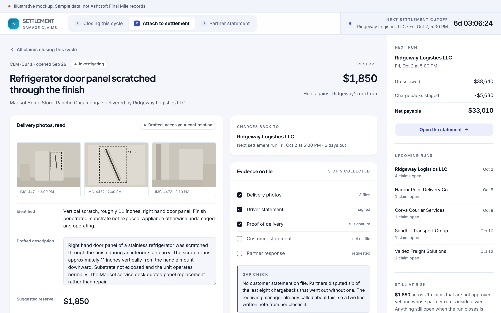
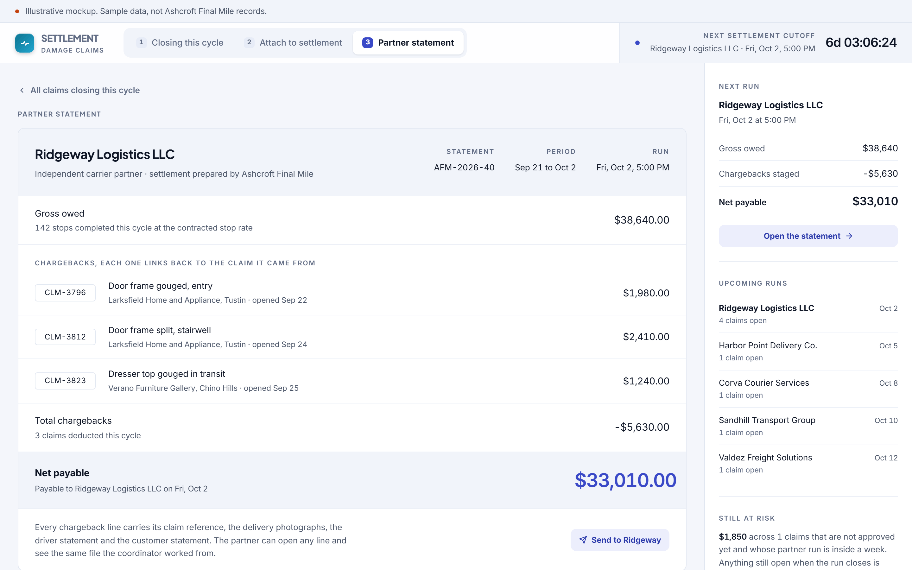
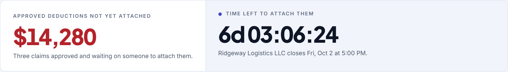
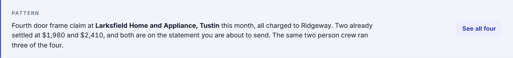
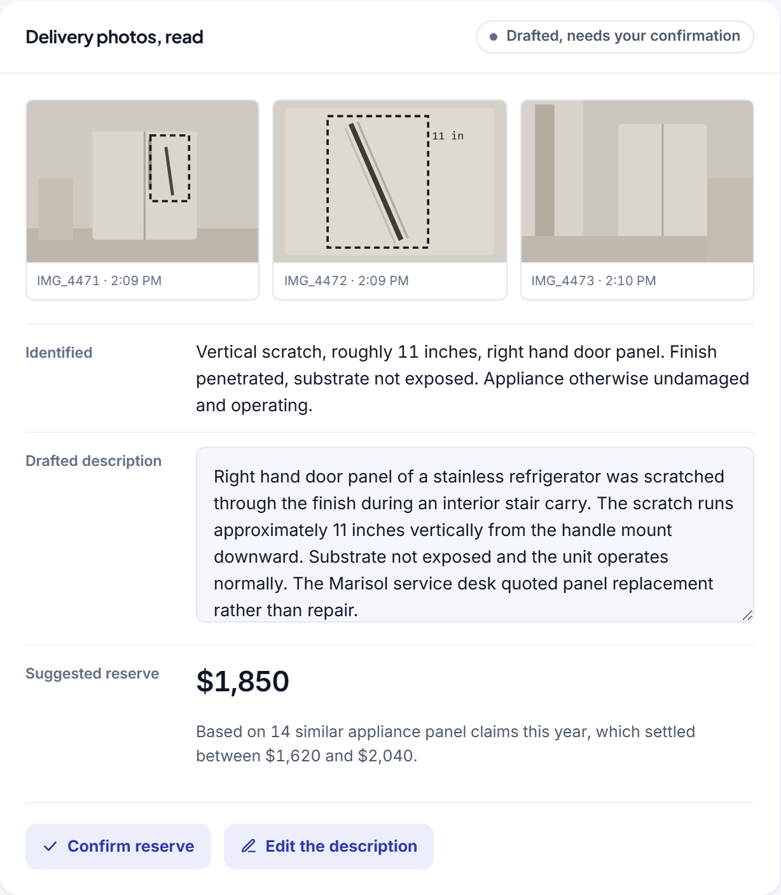

Concept, built to show the software behind a manual role. Not delivered client work.
A claim that misses the settlement cutoff is gone.
Damage claims are worth money only until the carrier settlement run closes. After that the loss is permanent and nobody sends a reminder.
The role you would hire for
The role is opening damage claims from driver reports and delivery photos, collecting statements from customers and carrier partners, setting reserves, and attaching approved deductions to weekly carrier settlements. The response window in the carrier agreements gets treated as a detail, and it is the whole job.
The manual process that implies
The work is a queue of claims in a spreadsheet, a folder of photographs on a phone, and a settlement run every Friday at five. The coordinator knows which claims are ready and which are still waiting on a partner, because they have been holding it in their head all week. What the spreadsheet cannot show is time. A claim approved on Thursday and attached on Monday is worth nothing, and nothing in the process says so out loud.
$14,280
approved for deduction and not yet attached, with five days left before the settlement run closes
A claim that misses the carrier settlement cutoff becomes a permanent loss. Everything in the screen is built around one deadline that nothing in the current process makes visible.
Three screens
Built to be read in a screenshot, then clicked through by whoever it lands with.



Detail
The three places where this stops being a report and starts being a tool.



What it would take to build for real
The concept is a proposal about the shape of the work. This is the honest version of the rest.
What it reads
Driver reports and delivery photographs, proof of delivery, the carrier agreements for cutoff days and response windows, and the settlement run that already exists in the accounting system.
What it writes
A chargeback line on the next settlement, linked to the claim, and a claim record complete enough that a partner dispute can be answered from one screen.
What is genuinely hard
Reading a damage photograph well enough to draft a reserve a person will accept. This works because the suggestion is always shown with its basis and can be overridden in one click, not because the read is always right.
Shape of the work
Five to seven weeks. Roughly $14,000 to $20,000. The countdown and the settlement attachment are the first two weeks. The photograph read is the rest.
Every engagement is staffed with a dedicated team and a named project lead who works directly with the person who owns the process. The software above was built before anyone paid for anything, which is the point.